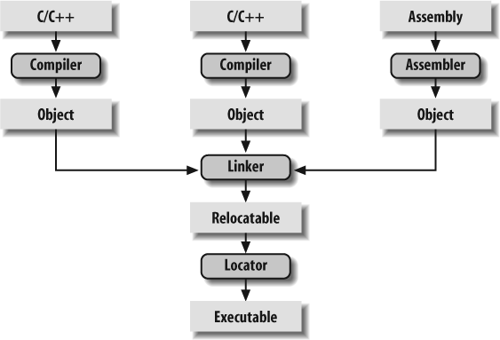

Embedded C++
Introduction to C++
Why C++ over C
C++ is superset of C
C++ is almost a super set of C. If you write any C source code or C source file. C++ compiler will acts as C compiler. This helps in smooth migration of existing C to C++.
Default arguments to functions
Function name overloading
References
A C++ reference is identical to C pointers. But they are safer as they can't be null and can't be uninitialized.
Classes and struct
Classes are similar to structs. A member function is a function which take pointer to object of class as an implicit parameter. Class with member function is similar to C struct and a function which takes structs as argument.
class A {
public:
int GetX();
private:
int x;
}
int A::GetX()
{
return x;
}
struct A {
int x;
}
int GetX(struct A * this)
{
return this->x;
}
Constructors and destructors
These are member function that is guaranteed to get called when objects are created and destroyed. This make sure all objects are properly initialized and destroyed. This avoids resource leaks and initilization bugs. There is no way in C to make this implicitly.
Namespaces
C++ namespace allow name reuse in different contexts. This avoids lengthy names with module/context prefixes like C.
Operator overloading
A C++ compiler replaces a function call when encounters an overloaded operator. Operator overloading improves the code readability if used properly.
Development tools
| Vendor | C++ Standard |
|---|---|
| Keil | C++11 |
| ARM | C++14 |
| IAR | C++14 |
| GCC | C++17 |
Evaluation Boards
Nucleo-F767ZI

Features
- 3 User LED
- On board ST Link extension board for easy debugging
- Mass storage
- Virtual COM port
- Flexible power supply options
- Ethrnet RJ45
Nucleo-F303RE

Features
- 1 User LED
- On board ST Link extension board for easy debugging
- Mass storage
- Virtual COM port
- Flexible power supply options
Nucleo-L073RZ

Features
- 1 User LED
- On board ST Link extension board for easy debugging
- Mass storage
- Virtual COM port
- Flexible power supply options
Setup

Programming tools stlink
WARNING
Please make sure not to connect both external 5 volts power supply and USB power supply at same time.
ST link usb drive
Download usb driver from https://my.st.com/content/my_st_com/en/products/development-tools/software-development-tools/stm32-software-development-tools/stm32-utilities/stsw-link009.license=1564137466456.product=STSW-LINK009.version=2.0.1.html Run stlinkwinusbinstall batch file to install driver.
ST link utilities
Download st link utility from https://my.st.com/content/my_st_com/en/products/development-tools/software-development-tools/stm32-software-development-tools/stm32-programmers/stsw-link004.html
Debug Tools
OpenOCD and STM GDB server
http://openocd.org/doc/html/index.html
OpenOCD is a Open On-Chip debugger that provides programming,debugging boudry-scan testing for embedded device. It acts as a server and acceptss incoming connection from GDB via port 3333 or telnet port 4444.
Setup
GCC cross compiler
- Go to the https://developer.arm.com
- Click on Tools and software >> Open source Software >> GNU toolchain
- Downlaod ARM GNU embedded toolchain as per your host platform (only 32 bit toolchains are available now)
stm32CubeIDE
ST has provided and eclipse based IDE which uses ARM Gcc backend to cross compile firmware. We will use this IDE to write , debug our firmware source code.
Verify installation
arm-none-eabi-g++ --version
Build Process

Cross compilation
Due to limited resources available on target hardware for running build tools development is mostly done on workstation or PC with higher memory and speed. This machine is called host machine and it runs the build tool but generate binary which will run on different (mostly microcontroller) hardware. This process of generating code for different target is called cross compilation.
Compiling
Compiler translate source code into machine code for individual source file. Output of compilation process is object code.
Linking
Linker compose multiple objects file into one single executable file. For gcc toolchain output is mostly ELF. Executable Linker Format ELF file contains different sections
- text
This section contains executable instructions of program. Controller's program counter always access instructions from this memory area.
- rodata
Contains read only values like constants. This section can be mapped to read only memory area.
- data
Containing the values of all the initialized variables of the program, accessible in the read/write mode at runtime. It is a section that contains all the variables, static or global, that have been initialized in the code. This area is remap to writable memory area as these values will be changing during program life time.
- bss (Blocks started by Symbol)
This section reserved all uninitialized variables and objects accessible during program runtime for modification. Because there in no values here ELF only describes this section but do not provide any contents. Startup code should initialize bss section to zero.
Every embedded target has different memory layout for program and data memory. Hence during linking process a custom linker script describing memory layout of target should be provided.
Loading
ELF file will be loaded to target system using programming tools or debug probes. ELF files need to be converted to format like intel hex or bin which then can be loaded at non volatile memory location accessible by program counter.
Execution
Upon reset controller will start executing text section loaded at reset address.
Linking
Script
The linker script is a file containing the description of the memory sections in the target, which need to be known in advance in order for the linker to place the symbols in the correct sections in flash, and instruct the firmware components about special locations in the memory mapping area that can be referenced in the code.
The file is recognizable by its .ld extension, and it is written in a specific language. As a rule of thumb, all the symbols from every single compiled object are grouped in the sections of the final executable image.
Custom Sections
Beside standard sections we can instruct linker to reserve custom sectors.
For eg. To calculate CRC of flash image we need to make sure unused sectors are filled with known values.
const uint8_t
__attribute__((section(“.crcfill”)))
private_key[100] = {0};
Literals
Literals are tokens of C++ program that represent constant values embedded in source code.
Interger Literals
| Literal |
Design

Write a Program
Build
Write Program
Compiling
Linking
Linker file
Flash
Converting to binary
ELf file consists of additional header information but to load binary on target flash we need to strip down this additional information.
arm-none-eabi-objcopy -I elf -O binary firmware.elf firmware.bin
Programming Controller
st-link_cli -C SWD -P firmware.bin 0x8000000 -V "after_programming"
Debug
Start debug server
load elf
Debug
Language Features
- Statically typed
- Support procedural , object oriented and generic programming paradigms
- Compiled
- Versatile standard library
- Encapsulation
- Inheritance
- Polymorphism
C vs C++
Type safety
Zero cost abstraction
Higher level abstractions using classes
namespece
- Provide a method for preventing name conflicts in large projects.
- allow to group entities like classes, objects and functions under a name.
- This way the global scope can be divided in "sub-scopes", each one with its own name.
#+SRCBEGIN C++ namespece stm32f767::Uart { classes Uart1 { } } #+SRCEND
Strongly typed
enum class
Function Inline
Macros can be replaced with strongly typed
Type Conversions
dynamiccast
reinterpretcast
staticcast
constcast
static asserts
This will help in catching logical errors early in compile time. Basic sytax is
static_assert ( bool_constexpr , message )
scoped enums
An enumeration is a distinct type whose values are restricted to a range of values. Intenally enumerations are of integer type. But C++ enumeration are more strongly typed compared to C. In C enum and interger are interchangeble but in C++ not unless explicitly casted.
Size of enumerations
Starting from C++ 11 we can now tell compiler to allocate specific size of enumerations constans. This will help in communication protocols parser we can directly use enumerations values in transmit or recieve buffer.
#include <stdio.h>
enum command { ON, OFF};
enum command c;
int main ()
{
printf ("Hello World %d",sizeof(c));
return 0;
}
Size of scoped enumerations
#include <iostream>
enum class command : char { ON, OFF};
enum class functioncode : short { READ, WRTE, UPDATE };
int main ()
{
std::cout << "scoped enum with size for command = "
<< sizeof(command) << std::endl ;
std::cout << "scoped enum with size for functioncode = "
<< sizeof(functioncode) << std::endl ;
return 0;
}
User defined literals
Temperature conversion
Delete functions
For specific device classes we don't want to create duplicate copy of same peripheral object. We can make sure nobody can accidently copy object we will delete copy constructor.
Declaring function pointers
typedef bool (*Transmit)(char *); using Transmit = bool(*)(char *);
Object Orinted programming
Operator overloading
return_type operator operator_symbol (list of parameters)
Exercise Toggle gpio pin
Hello World
We will write hello world program which will print "Hello World of C++ " sting to serial port using micro controller UART3.
Mixing C and C++ libraries
C++ compiler will use name mangeling hence functions name used by user will have diffrent name for compiler. Hence if you want to use a function from C library we should tell compiler not to change its name by telling compiler for C linkage.
extern int C_library_function(void);
To do this on entire header file with exported functions we can used
extern int C_library_function(void);
Templates
std::Array
std::bitset
std::tuple
References
Gnu C
Predefined macros
https://gcc.gnu.org/onlinedocs/cpp/Common-Predefined-Macros.html
Keil library
run time library support
http://www.keil.com/support/man/docs/armlib/armlib_chr1358938908603.htm
C++ libraries need C libraries for target specific support.
Imperative vs Declarative programming paradigm
Program List
Hello World 1
Introduce students to basic C++ development process by showing Hello world string on serial port using virtual com port of nucleo platform.
Exercise
- Twick program for another serial port.
- Try diffrent settings.
Hello World 2
Constructor overloading to use non default baud rate settings.
Serial Port Interface

We will now start exploring object oriented programmin paradigms.
Till now for every uart change we have to create individual objects of individual classe. Using inheritance feature we will create a base class interface for uart which then be overridden by individual subclasses. https://github.com/prasadghole/embeddedCppTrainingProjects/releases/tag/Serial_1
Exercise
Implement class for Uart Port 3
https://github.com/prasadghole/embeddedCppTrainingProjects/tree/master/SerialPort_Interface_AllUart
GPIO Class
Mostly this can be exercise for students. Instead of createing pin wise subclasses we can create port wise classes.

Exercise
Create a wrapper class (adapter pattern) so that for every board type we don't need to pass pin every time we call api.
Overload initialization functions.
overload constructor to take non default settings
GPIO with bitset
GPIO with interrupt
How to integrate interrupt handlers. We will show case using member function.
Exercise
ISR handlers can be made using static functions.
Exercise
GPIO class is interface is mixture of pin vs port functons. Need to refactor so that pin and functons are binded togethor.